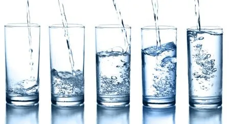

Виды воды на Земле: от минеральной до дистиллированной
Коротко: вода различается источником и обработкой. Природная (родниковая, артезианская) проходит естественную фильтрацию, минеральная содержит больше растворённых солей, дистиллированная почти не содержит примесей и нужна прежде всего для техники, а очищенная питьевая готовится на производстве для ежедневного употребления. Выбирайте воду под конкретную задачу: для питья, для детей, для чая или для бытовой техники. Состав и назначение производитель обязан указывать на этикетке.
Основная классификация воды
Слово «вода» объединяет напитки и технические жидкости с очень разными свойствами. Чтобы не путаться, удобно разделять воду по происхождению и по способу обработки. Ниже мы рассмотрим четыре самых распространённых вида.
1. Природная вода: родниковая и артезианская
Это вода из подземных источников, которая проходит естественную фильтрацию через слои песка и пород. Её состав зависит от местности: где-то она мягкая, где-то содержит много железа или кальция. Такая вода может быть вкусной, но стабильного состава не гарантирует: он меняется от источника к источнику и от сезона к сезону. Из-за возможного микробиологического загрязнения воду из неизвестной скважины перед питьём лучше проверять и обрабатывать.
2. Минеральная вода
Минеральная вода содержит больше растворённых солей, таких как соединения кальция, магния и натрия. По минерализации её делят на столовую, лечебно-столовую и лечебную. Столовая подходит для повседневного питья, а лечебную принимают курсами и по назначению врача. Различия между минеральной и очищенной водой подробнее описаны в статье бутилированная и минеральная вода: разница.
3. Дистиллированная вода
Её получают испарением и конденсацией, поэтому растворённых примесей в ней практически нет. Дистиллят применяют в утюгах, паровых системах, аккумуляторах и лабораториях. Как постоянный питьевой напиток его обычно не рекомендуют: у него плоский вкус, а в рационе люди получают соли из пищи, поэтому вопрос лучше обсудить с врачом. Чтобы не перепутать, подписывайте ёмкости с дистиллятом и храните их отдельно от питьевой воды: на вид она не отличается от обычной.
4. Очищенная питьевая вода
Это вода, которая подготовлена на производстве из исходной воды по многоступенчатой схеме и разлита в тару. Наша вода «Кришталево-чиста питна вода» проходит 8 ступеней очистки, включая обратный осмос и стерилизацию озоном. Её pH составляет около 7,5. Об этапах очистки читайте на странице технологии очистки.
Сравнение видов воды
| Вид воды | Источник и обработка | Для чего подходит |
|---|---|---|
| Природная | Родник или скважина, естественная фильтрация | Питьё после проверки состава |
| Минеральная | Природный источник с повышенной минерализацией | Столовая для питья, лечебная по рекомендации врача |
| Дистиллированная | Испарение и конденсация | Утюги, аккумуляторы, лаборатории |
| Очищенная питьевая | Многоступенчатая очистка на производстве | Ежедневное питьё и приготовление еды |
Какую воду выбрать для разных целей
- Для ежедневного питья. Подойдёт очищенная питьевая вода с умеренной минерализацией или столовая минеральная. Важно, чтобы производитель указывал состав и способ очистки.
- Для лечебных задач. Лечебную минеральную воду принимают только по назначению врача и по его схеме.
- Для детского питания. Ориентируйтесь на рекомендации педиатра и производителя смесей. Подробнее мы пишем в материале вода для детей: требования.
- Для техники. Утюгам, парогенераторам и аккумуляторам нужна дистиллированная вода, а не питьевая.
- Для чая, кофе и готовки. Нейтральная по вкусу очищенная вода не искажает вкус напитков и блюд.
Если вы выбираете воду для семьи, сравните варианты по составу, вкусу, удобству и стоимости литра. Мы собрали основные критерии в статье как выбрать питьевую воду для дома.
Как читать этикетку на бутылке
Название на упаковке мало что говорит без деталей, поэтому смотрите на сам текст этикетки. Обратите внимание на следующее:
- Тип воды. Должно быть указано, природная это вода, минеральная или питьевая очищенная.
- Минерализация. Для минеральной воды производитель указывает общее содержание солей и основные ионы.
- Источник или способ обработки. Для природной воды это источник, для питьевой очищенной — описание очистки.
- Дата розлива и срок годности. Бутыли лучше хранить в прохладном месте без прямого солнца.
- Данные производителя. Адрес и контакты позволяют задать вопрос о составе.
Если на этикетке нет состава или способа очистки, уточните это у продавца или выберите другой продукт.
Условия заказа воды в Crystal Water
Бутыль объёмом 19,9 л стоит 100 грн, залог за бутыль составляет 225 грн, помпа стоит 160 грн. Мы доставляем воду в Броварах и Киеве, минимальный заказ — 2 бутыли, а первую бутыль можно попробовать бесплатно. Актуальные условия смотрите на странице услуги и цены, а о компании читайте в разделе о нас. Другие материалы собраны в разделе статьи.
Как читать этикетку на воде
Чтобы не ошибиться с выбором, полезно знать, что именно указывает производитель. На упаковке обычно приводятся название и вид воды, место добычи или адрес производителя, объём, дата розлива и срок годности. Для минеральной воды дополнительно указывают общую минерализацию и основные ионы.
- Вид воды. Столовая, лечебно-столовая или лечебная: от этого зависит, как её можно пить.
- Минерализация. Чем она выше, тем осторожнее стоит относиться к ежедневному употреблению.
- Способ подготовки. Для очищенной воды хороший признак — описание этапов очистки.
- Условия хранения. Прохладное место без прямых солнечных лучей сохраняет вкус воды.
Правила хранения бутылей мы описали в статье как хранить бутыли с водой. Если сомневаетесь в составе конкретной воды, спросите у производителя или продавца: честный ответ на этот вопрос — один из лучших ориентиров при выборе.
Частые вопросы
Чем питьевая вода отличается от дистиллированной?
Дистиллированная вода практически не содержит примесей и предназначена для техники. Питьевая очищенная вода подготовлена для ежедневного употребления и имеет контролируемый состав.
Можно ли пить родниковую воду без обработки?
Состав родниковой воды непостоянен, и без анализа сказать о её безопасности нельзя. Перед употреблением воды из неизвестного источника её лучше проверить.
Какая вода подходит для чайника и кофемашины?
Для чая и кофе удобна очищенная вода с нейтральным вкусом. Для техники с паровыми системами следуйте инструкции производителя.
Чем столовая минеральная вода отличается от лечебной?
У столовой минерализация ниже, она подходит для питья. Лечебная содержит больше солей и принимается по назначению врача.
Попробуйте воду с доставкой домой
Закажите воду Crystal Water в Броварах или Киеве: первая бутыль для пробы бесплатно, минимальный заказ — 2 бутыли.
Посмотреть цены и заказать